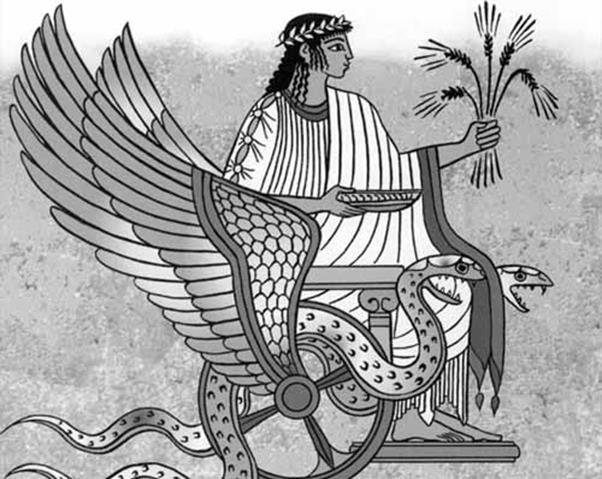

Érysichthon là vua xứ Thessalie, một vị vua kiêu căng và coi thường thần thánh. Hiếm thấy một vị vua nào lại có thái độ bất kính đối với thần thánh như Érysichthon. Y chẳng bao giờ dâng lễ vật tới các thần linh, cũng chẳng bao giờ đến các đền thờ để xin thần thánh ban cho một lời tiên đoán về số phận tương lai. Tệ hại hơn nữa, hỗn xược hơn nữa, y lại còn xúc phạm đến nữ thần Déméter. Năm đó Érysichthon làm nhà. Y sai gia nhân vào rừng đốn gỗ, những cây gỗ rất to, rất đẹp, rất quý ở trong một khu rừng thiêng dưới quyền cai quản của nữ thần Déméter. Nhiều người đã can ngăn y nhưng y quyết không nghe. “Cứ chặt đi, nếu có tội gì tao chịu.” Y quát bảo gia nhân như thế. Một người đầy tớ cầm rìu tiến đến trước một cây sồi. Nhìn thấy cây sồi cao lớn và đẹp đẽ, người đầy tớ không dám vung rìu chặt. Anh ta tâu với Érysichthon:
- Hỡi Érysichthon, vị vua đầy quyền thế của xứ Thessalie! Xin ngài hãy nghĩ lại. Đây là cây sồi to lớn và đẹp đẽ. Tuổi nó dễ có đến trăm năm. Mắt ta chưa từng bao giờ trông thấy một cây sồi cao to như thế. Hẳn rằng nơi đây là nhà ở của một vị nữ thần Dryades131 nào đó, người con gái tin yêu dưới quyền bảo hộ của vị nữ thần Déméter vĩ đại, vị nữ thần chỉ đem lại những phúc lợi to lớn cho người trần thế khốn khổ chúng ta. Rừng cây không thiếu gì gỗ. Xin ngài hãy chọn một cây gỗ khác để tránh tội xúc phạm đến nơi ở thiêng liêng của một vị nữ thần!
Nhưng nhà vua kiêu ngạo này đâu có chịu nghe lời khuyên bảo chân tình của một người đầy tớ. Hắn với thói quen xấu xa của kẻ có quyền thế, vung roi đánh người đầy tớ và giằng lấy cây rìu trong tay anh ta:
- Nhà ở của một vị nữ thần Dryades nào đó ta cũng chặt. Đứa nào sợ phạm tội hãy buông rìu tránh xa!
Và Érysichthon vung rìu chém cây sồi làm nó run lên. Tiếng rên rỉ, kêu than vang lên sau mỗi nhát rìu. Máu ở thân cây trào ra. Một người đầy tớ xót xa trước cảnh tượng ấy chạy lại cầm lấy tay nhà vua, ngăn chặn hành động bất kính. Anh ta chưa kịp nói thì nhà vua đã gạt phắt tay anh ta ra và tiện tay giáng muôn một nhát rìu vỡ sọ chết tươi. Érysichthon tiếp tục chặt cây sồi. Vết thương ở gốc cây ngày càng mở rộng và sâu hoắm. Cuối cùng cây sồi lảo đảo rồi ngã sầm xuống mặt đất đen. Vị nữ thần sống trong cây sồi trăm tuổi cũng chết theo ngôi nhà thân thiết của mình.
Các nữ thần Dryades của khu rừng thiêng đau xót trước cái chết của người bạn mình, mặc tang phục màu đen kéo nhau đến nữ thần Déméter vĩ đại xin nữ thần ra tay trừng phạt kẻ bạo ngược đã sát hại một người bạn thân thiết của mình. Chấp nhận lời cầu xin của các nàng Dryades, nữ thần quyết định bắt tên vua bạo ngược đó phải chịu một hình phạt xứng đáng. Hơn nữa Déméter cũng không thể chịu đựng nổi một hành động coi thường quyền uy của nàng quá đáng đến như thế. Déméter nghĩ cách trừng phạt. Nàng thấy chỉ có thể tìm đến nữ thần Đói thì mới xong việc này. Déméter phái ngay một nàng Dryades, giao cho cô ta chiếc xe rồng để đi mời nữ thần Đói về. Cỗ xe thần diệu đó chỉ bay một lát là qua Scythe đến những dãy núi Caucase. Nàng Dryades tìm thấy nữ thần Đói đang ngồi trên một mỏm núi khô cằn. Thần là một con người có hình thù rất kinh dị. Mắt sâu hoắm, da vàng bủng, nhăn nheo, tóc rối bù, người gầy guộc, khẳng hiu chỉ có da bọc lấy xương. Được đưa xe đến mời, nữ thần Đói đến gặp Déméter ngay. Sau khi nghe kể rõ chuyện, nữ thần Đói ra tay ngay tức khắc.
Nữ thần Đói bay đến căn nhà của Érysichthon. Bằng tài năng và pháp thuật của mình, nữ thần gây ra cho Érysichthon một cơn đói. Érysichthon thấy đói bụng bèn sai gia nhân dọn bữa cho ăn. Nhưng kỳ quái sao, y càng ăn càng thấy đói. Y quát bảo gia nhân dọn tiếp bữa nữa cho y ăn. Ăn hết y vẫn không thấy no mà lại càng thấy đói hơn. Y đã định bụng thôi không ăn nữa nhưng cơn đói giày vò y khốn khổ không ăn không thể chịu được. Nhưng cứ ăn vừa ngơi miệng là lại muốn ăn nữa, cứ thế ăn suốt ngày. Có bao nhiêu tiền của y chén hết, bán cả vàng bạc, quần áo, đồ đạc trong nhà để ăn. Thế mà vẫn không no. Lúc nào y cũng bị một cơn đói giày vò, đói cồn cào, đói xé ruột xé gan, đói như người bộ hành lạc đường phải nhịn đói, như người chiến sĩ cố thủ trong thành bị giặc vây hãm lâu ngày hết lương, như người ốm vừa mới khỏi ăn trả bữa... Cuối cùng Érysichthon chẳng còn gì ngoài người con gái tên là Mnestra và cái bụng đói cào đói cấu, đói ngấu đói nghiến của y. Chẳng nhẽ ăn con gái? Y đem bán con đi để có tiền ăn. May nhờ thần Poséidon thương xót nên Mnestra trốn thoát khỏi tay nhà vua. Thần đã ban cho người con gái đó phép biến dạng đổi hình cho nên Mnestra có thể biến thành con chim, con chuột, con ngựa, con bò để trở về nhà. Nhưng trở về nhà lần nào thì lần ấy Mnestra lại bị bố bán đi để lấy tiền ăn. Mnestra không trở về nhà nữa. Chỉ còn lại Érysichthon luôn luôn bị cơn đói hành hạ. Không chịu đựng được, Érysichthon ăn luôn bản thân mình, ngoạm, cắn, xé hết đùi đến tay rồi chết.
***
Về nữ thần Déméter, ngoài cuộc hôn nhân với thần Zeus sinh ra Perséphone - còn có tên là Coré - nữ thần cũng còn có một đôi cuộc nữa. Trước hết là cuộc hôn nhân với thần Poséidon. Vị thần Biển này để ý đến nữ thần Déméter từ lâu song nàng cứ lảng tránh. Không biết dùng cách gì, Poséidon biến mình thành một con ngựa để đến với Déméter, nhưng Déméter lại kịp thời biến thành một con ngựa cái lẩn trốn vào một bầy ngựa đang ăn cỏ, song cũng không thoát. Và họ sinh ra được một đứa con, một con tuấn mã chạy nhanh như gió, tên là Areion. Trong huyền thoại này chúng ta thấy dấu vết của tôtem giáo. Có thể ghi nhận nguyện vọng của người xưa muốn có một sự “kết hôn” giữa đất Déméter với nước Poséidon như là một điều kiện cần thiết của mùa màng. Cuộc hôn nhân thứ hai là với thần Iasion. Iasion là con của thần Zeus và nàng Électre, một tiên nữ trong số bảy tiên nữ chị em Pléiades, có người kể thực ra đây không phải là một cuộc hôn nhân mà là một vụ cưỡng hiếp. Iasion đã cưỡng hiếp Déméter trên một thửa ruộng đã được cày ba lần. Zeus biết chuyện, nổi cơn ghen, giáng sét giết chết Iasion. Ít lâu sau, Déméter sang đảo Crète sinh một đứa con trai. Đó là thần Ploutos vị thần của sự Giàu có, Sung túc.
Déméter và Poséidon còn có một biệt danh chung là Thesmophora, tiếng Hy Lạp có nghĩa là “những người lập pháp”. Do đó ở nhiều địa phương trên đất Hy Lạp như Athènes, Arcadie, đảo Délos... có ngày hội Thesmophorie, ngày hội thờ cúng nữ thần của sự Phì nhiêu, No ấm, Sung túc, những người bảo vệ cho đất đai, mùa màng, đặt ra luật lệ hôn nhân và pháp luật, trật tự cho xã hội. Trong những lễ hiến tế hai vị nữ thần này, người xưa thường dâng những lễ vật như bò, lợn, hoa quả, các tầng ong mật, bông lúa mì, hoa anh túc.
Déméter, Perséphone và Triptolème là ba vị thần của nghề nông, phản ánh thời kỳ con người đã định cư và tìm được một nguồn thức ăn mới, vững chắc hơn, phong phú hơn nguồn thức ăn kiếm được từ săn bắn, hái đượm. Tượng nữ thần Déméter được người xưa thể hiện là một người phụ nữ dáng người hơi đậm, vẻ mặt nghiêm trang, tóc như những giẻ lúa mì buông xõa xuống hai vai, hai tay cầm giơ ngang vai những bông lúa mì chen vào với hoa anh túc, hai con rắn quấn quanh cổ tay. Hoa anh túc (thuốc phiện) tượng trưng cho giấc ngủ của đất đai và của người chết. Lúa mì, báu vật của Déméter mà nàng đã ban cho loài người và gìn giữ cho loài người. Hai con rắn tượng trưng cho Đất và sự vĩnh hằng. Còn Triptolème, theo một bức vẽ trên bình gốm Hy Lạp là một chàng trai ngồi trên một cỗ xe có hai con rồng có cánh, một tay cầm cây vương trượng, còn một tay cầm bông lúa mì.
